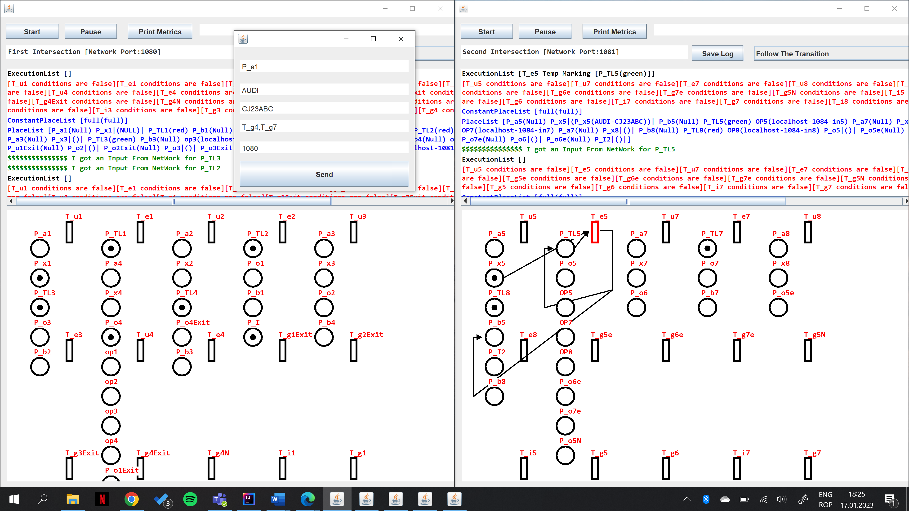

The problem consists of two intersections. The first intersection having 4 input lanes and 4 output lanes and the second intersection having 3 input lanes and 3 output lanes. They communicate tough a similar lane. Two controllers are designed usind the OETPN model.
GitHub 